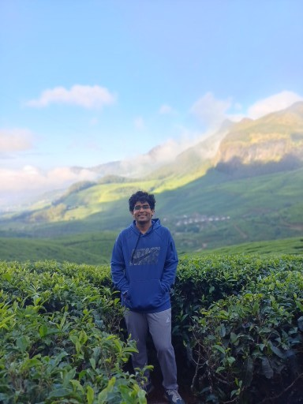

Kartik
Ahluwalia.
Currently building secure APIs.|
Junior SWE · Rystad Energy · Bengaluru
I own the security and observability layer of a production scenario-modelling platform — GraphQL authorization, rate limiting, OpenTelemetry pipelines, and the Kubernetes infrastructure that keeps 600+ client dashboards running. I care about systems that stay reliable under load and are easy to debug when they don't.
Backend-leaning,
full-stack when it counts.
CS Engineering graduate from Manipal Institute of Technology (2022–2026, CGPA 8.99/10 · Top 5%), currently working as a Junior Software Engineer on Rystad Energy's Global Solutions & Insights team.
My day-to-day sits at the intersection of backend security and observability — authorization, rate limiting, and the telemetry that tells you something is wrong before a client does. Before Rystad, I spent two years shipping across the stack: a job board at Amantya Technologies, segmentation models at Xebia, and two published research papers in deep learning and NLP.
I like problems that reward precision — the kind where a wrong assumption about auth or a missing index shows up in production, not in a demo.
Junior SWE @ Rystad Energy · owns security & observability for Scenario Manager

Deploy log.
Four roles — each one a step from "wrote the feature" to "own the system."
Junior Software Engineer
Rystad Energy · Bengaluru, India
- Own security and observability engineering for Scenario Manager, a client-facing scenario-modelling platform on .NET, GraphQL, Angular, Python, Kubernetes.
- Driving OpenTelemetry rollout across remaining Python model services; leading production cutover of the Kubernetes migration.
- Diagnosed an AKS-to-on-prem network block for the DynamiX API; traced root cause to a hardcoded URL in a shared package, designed a ConfigMap-per-cluster solution across the dashboard handler template and all downstream repos.
Software Engineering Intern
Rystad Energy · Bengaluru, India
- Delivered 30+ production tickets across .NET, Angular, and Python services over 6 months.
- Hardened the API boundary: role-based authorization on admin GraphQL operations, sliding-window rate limiting (100 req/60s, HTTP 429), and parametrised injection-prone SQL — pinned by CI tests.
- Built a centralised OpenTelemetry logging pipeline with dashboard-id correlation, cutting failed-run diagnosis from hours of manual log trawling to a single Grafana query.
- Shipped a full-stack log admin feature (SQL Server → REST → Angular) and a Grafana metrics dashboard.
- Migrated the app governing 600+ dashboards from IIS to Kubernetes/Helm/ArgoCD — manual deployments became Git-versioned releases with one-commit rollback.
Trainee Engineer
Amantya Technologies · Gurgaon, India
- Built a high-performance job board using Next.js and PostgreSQL, optimizing queries via Prisma ORM to reduce search API latency by 40%.
- Implemented RBAC using NextAuth.js and GitHub OAuth across multi-tenant user data.
Machine Learning Intern
Xebia · Gurgaon, India
- Built customer segmentation models (K-Means) on 50k+ records, improving marketing targeting accuracy by 30%.
Selected work.
Two published papers, two live products, and a couple of models trained for the craft of it.
Breast Ultrasound Image Classification
Ensemble model combining fine-tuned EfficientNetV2 and Vision Transformers for breast cancer detection — 91.1% accuracy, 0.91 weighted F1. Speckle noise reduction pipeline, presented in Bangalore.
SMS Spam Detection
Optimized Random Forest classifier achieving 98% F1-score. Published and presented at WCSE 2023, Singapore — Best Oral Presenter among international submissions.
YT Time Machine
Manifest V3 extension for browsing a YouTube channel's history by year range. Custom Vercel serverless proxy secures API keys and handles server-side auth while keeping the client lightweight.
VibeVerse Chat
Fault-tolerant real-time chat service built with Socket.IO and Node.js. Scalable MongoDB schema for chat history and user metadata, exposed via RESTful APIs.
Bit Predict
Deep learning models (LSTM, Conv1D) built with TensorFlow and Keras to forecast Bitcoin prices, achieving a mean absolute error of 615.5 on held-out data.
Twitter Sentiment Analysis
Classifier tagging tweet sentiment as positive, negative, or neutral — built on classic NLP preprocessing and scikit-learn models.
What I build with.
Grouped the way I'd group services on an architecture diagram.
Languages
Backend & Web
Infra & Observability
ML & Data
Databases
Tooling
Achievements & certifications.
- 01500+ problems solved across LeetCode, GFG, Codeforces, CodeChef
- 02ICPC 2024 Contestant — Asia Chennai Preliminary Contest
- 03MassMutual India Scholarship (ISACA, 2024)
- 04MIT Achiever Scholarship — Top 5% of batch
- 05National Semi-Finalist — TATA Imagination Challenge (2024)
- 06HPAIR Asia Conference — Selected Delegate
- 07Duke of Edinburgh's Award — Gold, Silver & Bronze
- 08Vice Chair, IEEE CS Student Chapter (2023–2024)
- 09R&D Head, CyberSpace Club (2023–2024)
- 10Executive Member, ACM Student Chapter (2022–2023)